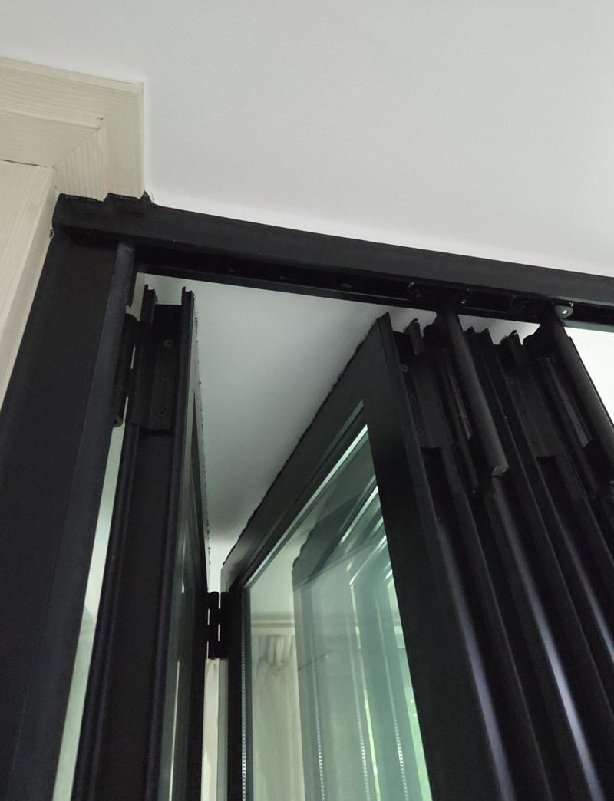
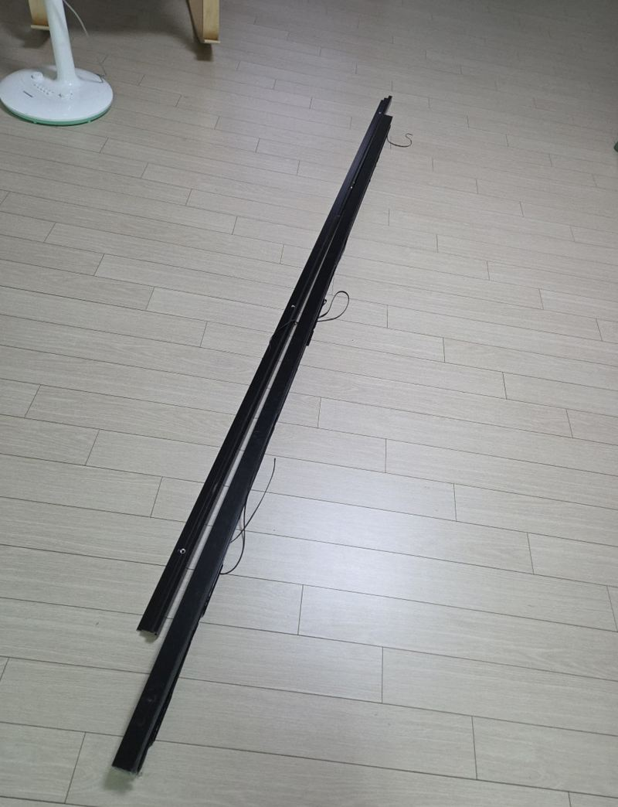
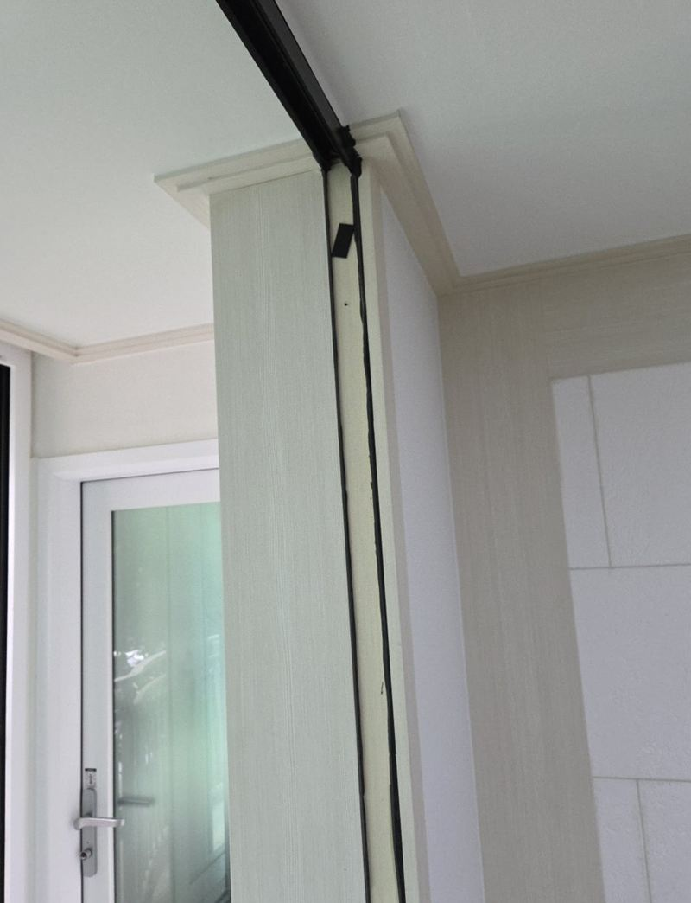
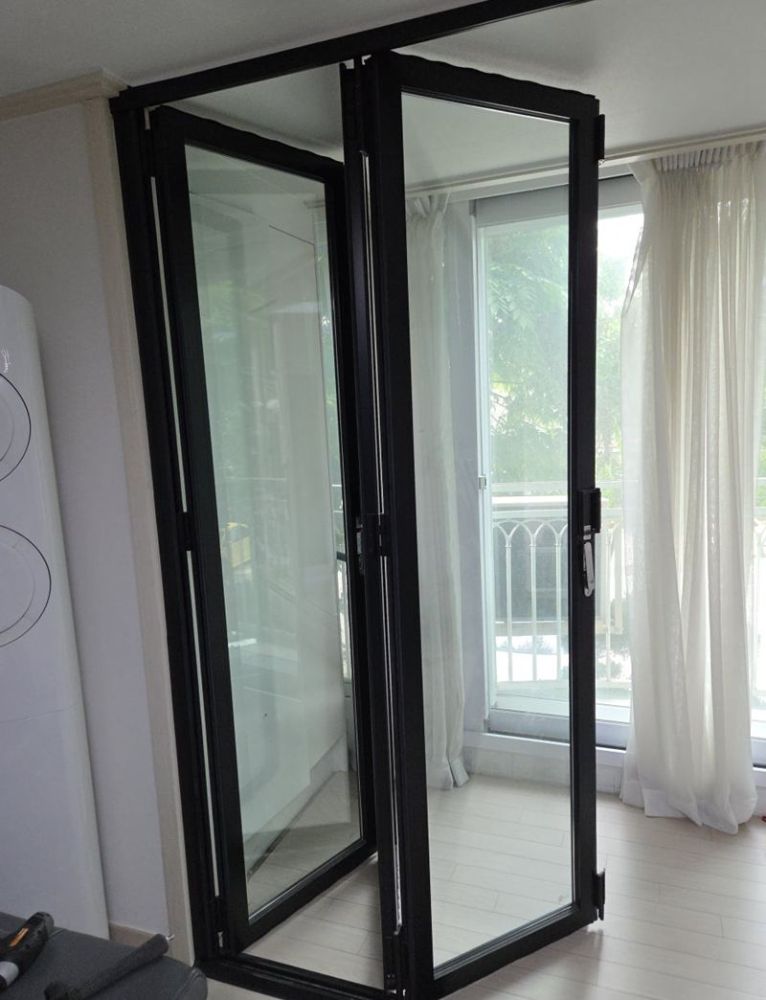
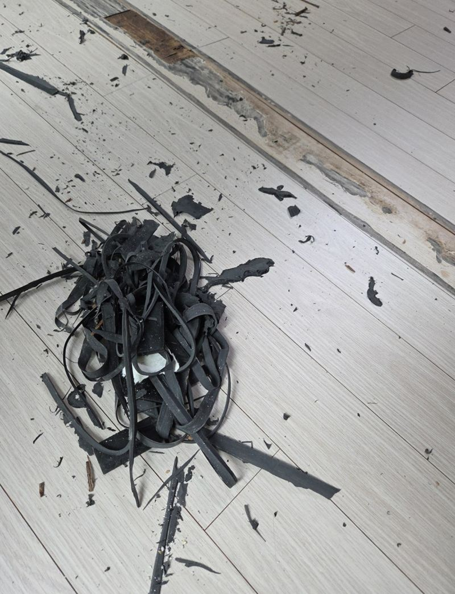
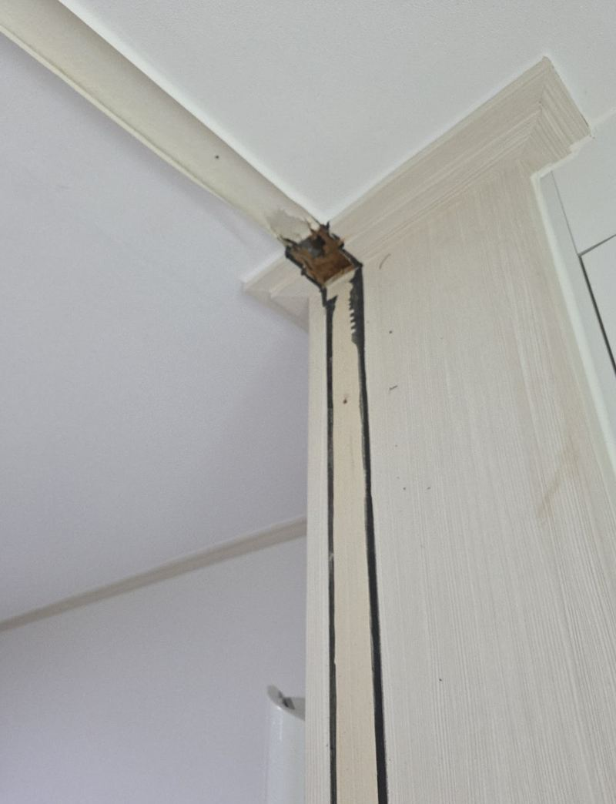

구리 발코니 폴딩도어 상하부 레일 철거 방법

 철거 전철거 후
철거 전철거 후← 밀어서 전후 비교 →
처음에는 공간을 나누려고 단 폴딩도어였지만, 어느새 늘 열어 둔 채로만 쓰고 있었다는 집이에요. 레일에는 먼지가 계속 쌓이고, 접힌 문이 거실을 좁아 보이게 했어요. 문짝과 위아래 레일까지 모두 걷어 내고, 사시는 집이라 바닥과 벽지가 상하지 않게 순서를 잡았어요.
| 현장 | 구리 교문동 아파트, 거실과 발코니 사이 |
|---|---|
| 요청 | 문짝·상하부 레일 전부 철거, 폐기 수거, 깔끔한 마감 |
| 한 일 | 보양 → 문짝 분리 → 상부 레일 → 하부 레일 → 실리콘·나사 자국 정리 → 수거 |
| 주의 | 거주 중이라 바닥재·벽지 손상 최소화 |
폴딩도어는 이렇게 붙어 있어요
겉으로는 단순해 보여도 폴딩도어는 위 레일에 롤러로 매달리고, 아래 레일이 방향을 잡아 주며, 둘레는 나사와 실리콘으로 고정돼 있어요. 아무 데나 먼저 떼면 문짝이 기울어 넘어지거나 레일이 휘면서 천장·바닥을 긁어요. 그래서 문짝 → 위 레일 → 아래 레일 순서로 풀었어요.


레일 자국, 남을까?
레일을 떼면 고정 나사 구멍과 실리콘 자국이 남아요. 실리콘은 칼로 걷고 잔여물을 닦아 내고, 나사 구멍은 눈에 덜 띄게 정리했어요. 다만 바닥재 색이 레일 밑과 바깥이 달라 보일 수 있다는 점은 작업 전에 미리 설명드렸어요. 오래 덮여 있던 자리는 햇빛을 덜 받아 색이 조금 다를 수 있거든요.




사는 집에서 철거할 때
- 바닥 보양문짝을 내려놓는 자리와 동선에 보호재를 깔아요.
- 가구 미리 옮기기폴딩도어 앞 1~2m는 비워 두시면 작업이 빨라요.
- 먼지레일 안에 쌓인 먼지가 떨어지니 근처 물건은 덮어 두세요.
- 폐기떼어 낸 문과 레일은 수거해서 정리해요.
폴딩도어 철거를 많이 하는 경우
- 늘 열어 두고만 써요공간만 차지하면 철거하는 게 거실이 넓어 보여요.
- 레일에 먼지가 쌓여 청소가 힘들어요바닥 레일은 먼지와 머리카락이 끼기 쉬워요.
- 문이 무겁고 소리가 나요수리보다 철거를 원하실 때도 많아요.
철거 후 많이 하시는 것
- 거실 쪽 바닥 이어 붙이기레일 자리 색 차이가 신경 쓰이면 바닥재 보수를 같이 상의해요.
- 커튼·블라인드 달기공간을 나누고 싶을 땐 가벼운 커튼으로 대신하는 분이 많아요.
- 발코니 수납장 놓기넓어진 발코니 쪽에 수납장을 두기도 해요.
폴딩도어 철거 질문
철거 후 레일 자리에 몰딩을 댈 수 있나요?
천장 쪽 자국이 신경 쓰이면 몰딩으로 덮는 방법이 있어요. 원하시면 함께 봐요.
나중에 다시 달 수도 있나요?
떼어 낸 레일 자리에 새 레일을 다시 고정할 수 있어요. 문짝을 보관하실 거면 미리 말씀해 주세요.
강화유리 문짝도 같은 방식인가요?
유리문은 훨씬 무거워 인원과 순서를 더 신경 써요. 다른 현장 사례도 참고해 보세요.
바닥에 레일이 매립돼 있으면요?
매립형은 레일을 뺀 홈을 메워야 해서 마감 작업이 더해져요.
관리사무소 신고가 필요한가요?
소음이 나는 작업이라 단지 규정을 미리 확인해 주세요.
철거 비용은 무엇으로 정해지나요?
문짝 수와 재질(유리·알루미늄), 레일 길이, 폐기물 양, 마감 범위에 따라 달라져요.
철거 작업 시간 동안 집에 있어도 되나요?
네, 사시는 집에서도 진행해요. 먼지가 날 수 있어 근처 물건만 덮어 주세요.
블랙 프레임 말고 흰색 폴딩도어도 똑같나요?
색과 상관없이 구조는 비슷해요. 레일 형태만 사진으로 확인해요.
철거한 뒤 그 자리에 중문을 달 수 있나요?
레일 자리를 정리한 뒤 새 문을 다는 것도 가능해요. 원하는 문 종류를 알려주세요.
같은 폴딩도어, 다른 현장
폴딩도어 전체와 위·아래 레일 사진을 보내 주세요.
전화 상담 010-4517-9872